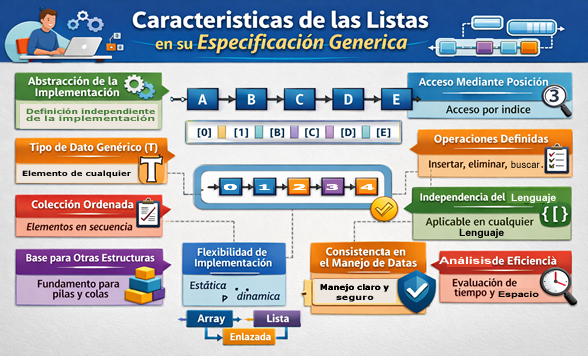
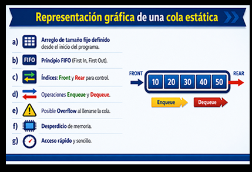
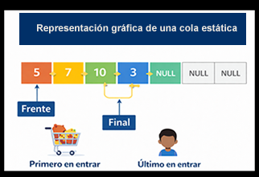
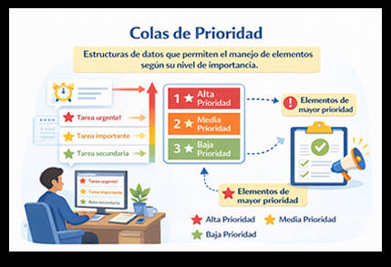
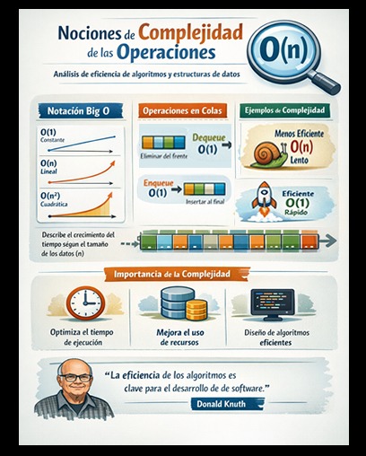
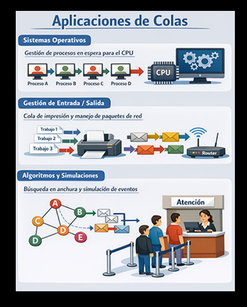

Las listas representan uno de los conceptos más fundamentales y poderosos dentro de la algoritmia, ya que permiten organizar la información de manera estructurada y flexible. Desde aplicaciones sencillas hasta sistemas complejos, el manejo adecuado de los datos marca la diferencia entre un programa eficiente y uno limitado. Comprender cómo funcionan las listas no solo facilita la resolución de problemas, sino que abre la puerta al entendimiento de estructuras más avanzadas utilizadas en el desarrollo de software.
A lo largo de este tema, descubrirás cómo las listas permiten almacenar, recorrer y manipular datos de forma ordenada, adaptándose a distintas necesidades. Además, verás cómo a partir de ellas surgen estructuras como pilas y colas, esenciales en múltiples aplicaciones del mundo real. Este conocimiento no solo fortalecerá tu lógica de programación, sino que también te permitirá diseñar soluciones más claras, eficientes y profesionales.
Radica en que permiten definir de manera abstracta y formal cómo debe comportarse esta estructura de datos, sin depender de un lenguaje de programación o de una implementación específica. Esto significa que, al trabajar con una especificación genérica, el programador se enfoca en las operaciones y el comportamiento lógico de la lista (qué hace), en lugar de preocuparse por los detalles internos (cómo lo hace). Esta separación facilita el diseño de algoritmos más claros, reutilizables y fáciles de mantener, ya que la misma especificación puede aplicarse a distintas implementaciones como arreglos o listas enlazadas.
Además, las especificaciones genéricas de las listas son fundamentales porque establecen un conjunto estándar de operaciones (insertar, eliminar, buscar, acceder, etc.) que garantizan consistencia en el manejo de los datos. Esto permite que diferentes desarrolladores trabajen con una misma estructura conceptual sin ambigüedades, favoreciendo la interoperabilidad y la comprensión del código. Asimismo, al establcer contratos claros sobre el comportamiento de la lista, se mejora la calidad del software, ya que se pueden validar las operaciones independientemente de su implementación concreta.
Por otro lado, esta abstracción es clave en la algoritmia porque permite evaluar la eficiencia y complejidad de las operaciones sin depender del detalle técnico de la estructura subyacente. De esta manera, el programador puede elegir la mejor implementación según las necesidades del problema, optimizando recursos como tiempo y memoria. En consecuencia, las listas, a través de sus especificaciones genéricas, se convierten en una herramienta esencial para el desarrollo de soluciones eficientes, modulares y escalables dentro de la informática (Luis Joyanes Aguilar, 2013).
Las listas, desde su especificación genérica, presentan un conjunto de características que permiten comprender su comportamiento abstracto y su utilidad dentro de la algoritmia:
Estas características hacen que la especificación genérica de las listas sea un elemento clave en la algoritmia, ya que proporciona una base sólida para el diseño de estructuras de datos eficientes y soluciones bien estructuradas (Luis Joyanes Aguilar, 2013).

Es la forma de representación mediante un arreglo de tamaño fijo definido desde el inicio del programa. En este enfoque, los elementos se insertan en el extremo rear (final) y se eliminan del front (frente), respetando el principio FIFO (First In, First Out). Para su control se utilizan índices que permiten gestionar las operaciones de enqueue (inserción) y dequeue (eliminación). No obstante, presenta limitaciones como el desbordamiento (overflow) cuando se alcanza la capacidad máxima y el posible desperdicio de memoria; aun así, ofrece simplicidad y rapidez en su implementación (Seymour Lipschutz, 2014).

Se basa en el uso de un arreglo de tamaño fijo en el que los elementos se almacenan de manera contigua en memoria, respetando el principio FIFO (primero en entrar, primero en salir).
Su funcionamiento se emplean dos variables de control: el índice frente, que señala el primer elemento disponible para ser eliminado, y el índice final, que indica la posición donde se insertará un nuevo dato. Inicialmente, ambos índices suelen establecerse en valores que representen una cola vacía, y conforme se realizan operaciones, estos se actualizan de manera secuencial.
La operación de inserción (enqueue) consiste en incrementar el índice final e insertar el elemento en esa posición, siempre que la cola no esté llena; mientras que la eliminación (dequeue) implica extraer el elemento apuntado por frente y posteriormente avanzar dicho índice.
Esta estructura presenta condiciones importantes como el desbordamiento, cuando el arreglo alcanza su capacidad máxima, y el subdesbordamiento, cuando se intenta eliminar un elemento de una cola vacía. Aunque su principal ventaja radica en la eficiencia de sus operaciones, que se ejecutan en tiempo constante, una de sus limitaciones es el posible desperdicio de espacio, ya que las posiciones liberadas al inicio no se reutilizan en una implementación simple
Según Thomas H. Cormen et al. (2009), este tipo de estructuras permite organizar y gestionar datos de forma ordenada mediante operaciones básicas bien definidas, facilitando su manipulación dentro de los sistemas computacionales.

constituyen una variante de las estructuras de datos tipo cola en la que cada elemento no solo se inserta, sino que además se le asigna un nivel de prioridad, determinando el orden en el que será atendido o eliminado.
A diferencia de una cola tradicional que sigue el principio FIFO (primero en entrar, primero en salir), en una cola de prioridad los elementos se procesan de acuerdo con su importancia, de modo que aquel con mayor (o menor, según el criterio) prioridad será el primero en salir, independientemente de su orden de llegada.
En su implementación, pueden utilizarse arreglos, listas enlazadas o estructuras más eficientes como montículos (heaps), donde la organización interna permite acceder rápidamente al elemento prioritario. Las operaciones fundamentales incluyen la inserción de un elemento con su prioridad asociada y la eliminación del elemento con mayor prioridad, manteniendo siempre el orden establecido. Este tipo de estructura es ampliamente utilizado en sistemas operativos, algoritmos de planificación de tareas y problemas de optimización, donde es necesario gestionar elementos bajo criterios de relevancia.
De acuerdo con Thomas H. Cormen et al. (2009), las colas de prioridad permiten seleccionar eficientemente el siguiente elemento a procesar en función de una clave, optimizando así el rendimiento en diversos algoritmos y aplicaciones computacionales.

permiten analizar qué tan eficiente es una estructura de datos o un algoritmo en función del tiempo que tarda en ejecutar sus operaciones básicas, como insertar, eliminar o buscar elementos. Este análisis se expresa generalmente mediante la notación Big O (O), la cual describe el comportamiento del algoritmo conforme crece el tamaño de los datos (n), sin enfocarse en tiempos exactos, sino en su tendencia de crecimiento. De esta forma, es posible comparar distintas implementaciones y determinar cuál resulta más adecuada según el problema a resolver.
Permiten analizar qué tan eficiente es una estructura de datos o un algoritmo en función del tiempo que tarda en ejecutar sus operaciones básicas, como insertar, eliminar o buscar elementos. Este análisis se expresa generalmente mediante la notación Big O (O), la cual describe el comportamiento del algoritmo conforme crece el tamaño de los datos (n), sin enfocarse en tiempos exactos, sino en su tendencia de crecimiento. De esta forma, es posible comparar distintas implementaciones y determinar cuál resulta más adecuada según el problema a resolver.
En el caso de las estructuras de datos lineales, como las colas, las operaciones principales suelen tener una complejidad constante O(1) cuando se implementan de forma eficiente, ya que tanto la inserción (enqueue) como la eliminación (dequeue) solo requieren actualizar índices como frente y final. Sin embargo, en algunas implementaciones menos optimizadas, ciertas operaciones pueden implicar desplazamientos de elementos, lo que incrementa la complejidad a O(n). Por ello, el diseño de la estructura influye directamente en su rendimiento.
Comprender estas nociones resulta fundamental en el desarrollo de software, ya que permite anticipar el comportamiento de los sistemas cuando manejan grandes volúmenes de información. Una elección adecuada de la estructura de datos y su implementación puede reducir significativamente el tiempo de ejecución y el consumo de recursos. Como señala Donald Knuth (2011), el análisis de la eficiencia de los algoritmos es clave para diseñar soluciones óptimas y escalables dentro de la computación.

Las colas tienen múltiples aplicaciones en el ámbito de la computación debido a su capacidad para organizar y procesar elementos en orden secuencial. Una de sus aplicaciones más comunes se encuentra en los sistemas operativos, donde se utilizan para la gestión de procesos y tareas. Por ejemplo, los procesos que esperan ser ejecutados por el CPU se almacenan en colas, permitiendo que el sistema los atienda en el orden en que llegan o según ciertas políticas de planificación, lo que garantiza un uso eficiente de los recursos del sistema
Otra aplicación importante de las colas se observa en el manejo de estructuras de entrada y salida (E/S), como la impresión de documentos. En este caso, los trabajos de impresión se organizan en una cola, donde el primero en enviarse es el primero en procesarse, evitando conflictos y asegurando un flujo ordenado de operaciones. De manera similar, en redes de computadoras, las colas se emplean para gestionar paquetes de datos que deben ser transmitidos, permitiendo regular el tráfico y evitar la congestión en los sistemas de comunicación.
Según Mark Allen Weiss (2014), las colas facilitan la organización y procesamiento eficiente de datos en diversos contextos computacionales, siendo esenciales para el desarrollo de soluciones estructuradas.

A continuación, se explican la funcionalidad de las colas:
Evalúa tu comprensión sobre colas y sus características.